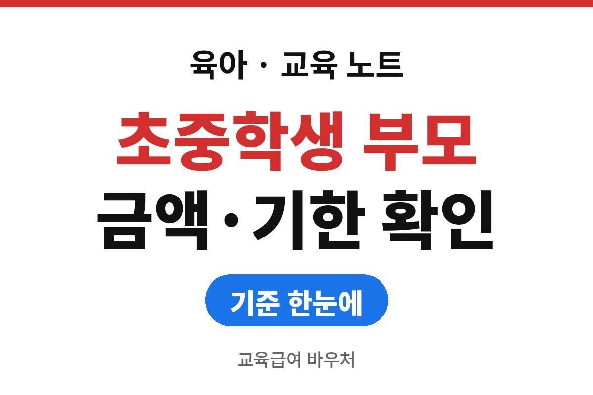
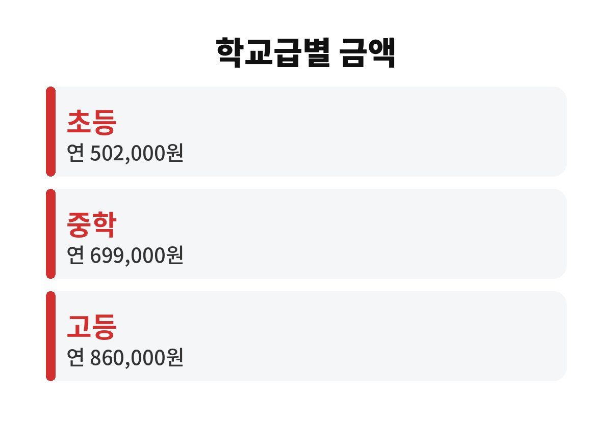
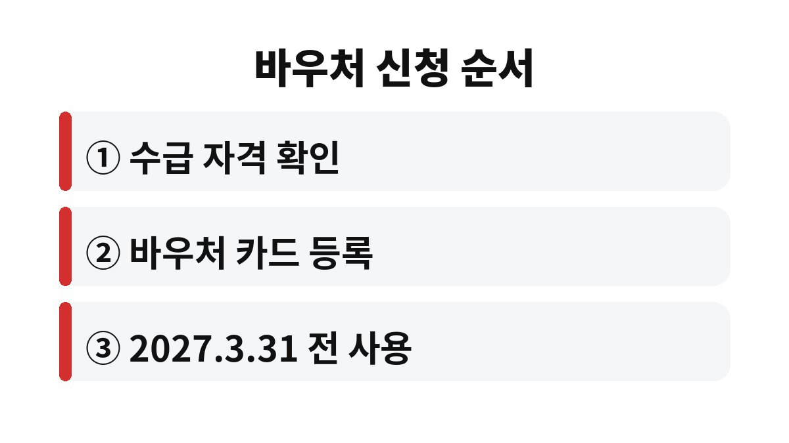

교육급여 바우처는 초등학생 연 50만 2천 원, 중학생 연 69만 9천 원이고, 바우처 신청은 2027년 2월 28일까지 할 수 있다.
받은 포인트는 2027년 3월 31일까지 쓰며, 기한이 지나면 쓸 수 없다.
교육활동지원비라고도 부르는 이 지원은 기준 중위소득 50% 이하 가구의 초·중·고 학생이 대상이다. 아래 내용은 경기도교육청의 2026학년도 교육급여 지원 계획을 바탕으로 했고, 지급단가와 근거는 교육부 운영방안을 따른다고 적혀 있다. 접수 방식은 지역마다 조금씩 다를 수 있다.
교육활동지원비는 학생 1인당 연 1회, 수급권자가 가진 카드 등에 포인트 형태로 지급된다.
2026년 금액은 초등학생 502,000원, 중학생 699,000원, 고등학생 860,000원이다.
고등학생은 지난해보다 92,000원 올랐고, 초등학생은 15,000원, 중학생은 20,000원 올랐다.
| 학교급 | 2026년 금액 | 2025년 대비 |
|---|---|---|
| 초등학생 | 502,000원 | +15,000원 |
| 중학생 | 699,000원 | +20,000원 |
| 고등학생 | 860,000원 | +92,000원 |

바우처 신청은 2027년 2월 28일까지, 사용은 2027년 3월 31일까지다.
겨울방학에 쓰려고 미뤄 두었다가 신청 기한을 넘기는 일이 없도록 날짜를 먼저 적어 둔다.
대상은 기준 중위소득 50% 이하 가구의 학생이다.
2026년 기준으로 4인 가구는 월 3,247,369원, 2인 가구는 2,099,646원, 6인 가구는 4,277,976원이 선정기준이다.
다만 통장에 찍히는 월급을 그대로 비교하는 것이 아니라 소득에 재산을 소득으로 환산한 금액을 더한 소득인정액으로 심사한다.
예를 들어 부모의 월 소득이 기준보다 낮아 보여도 집이나 자동차 같은 재산이 소득으로 환산되어 더해지면 소득인정액이 기준을 넘을 수 있다.
반대로 소득이 다소 높아 보여도 부채나 가구원 수에 따라 대상이 되는 경우가 있다.
그래서 계산은 직접 하지 않고 복지로의 모의계산이나 행정복지센터 상담으로 확인한다.
소득인정액이 기준을 넘으면 자격이 중지된다.
휴학, 자퇴, 졸업 같은 학적 변동이 생기면 그 다음 날부터 중지된다.
중지일 이전에 받은 급여는 반납하지 않는다.
자격 신청과 바우처 신청은 접수처가 다르다는 점이 처음에는 낯설다.
앞의 두 단계는 복지 담당 기관에서, 세 번째 단계부터는 한국장학재단 쪽에서 이루어진다.
보호자나 만 14세 이상 학생 본인이 신청할 수 있다고 안내하는 보도도 있으나 접수 주체는 거주지 안내를 따른다.

교육급여 수급자로 정해졌어도 바우처를 따로 신청하지 않으면 포인트가 들어오지 않는다.
경기도교육청 계획에는 바우처를 신청하지 않은 수급자를 위해 2026년 12월부터 2027년 2월까지 교육지원청을 찾아가 접수하는 방법도 적혀 있다.
이때는 신분증을 가져가고, 방문 전에 담당자에게 먼저 전화한다.
유흥·사행업종, 청소년 출입 불가 업종, 상품권, 성인용품 구매만 제한되고 그 밖의 곳은 원칙적으로 쓸 수 있다.
경기도 계획 기준이라 지역이나 카드 종류에 따라 결제가 되지 않는 가맹점이 있을 수 있으니 결제 전에 확인한다.
경기도교육청 계획에는 교육급여 신청 기간이 2026년 12월 31일까지로 적혀 있다.
일부 보도에서는 연중 신청할 수 있다고 쓰기도 했다.
두 자료가 어긋나므로 12월이 지나기 전에 거주지 행정복지센터에 확인하는 쪽이 안전하다.
소득이나 가구원 변동을 신고하지 않거나 줄여서 신고하면 부정수급으로 보아 환수될 수 있다.
한부모가족 학용품비 연 100,000원을 받는 가구는 그 금액을 뺀 차액만큼 교육활동지원비를 받는다.
우리 가구가 대상인지는 소득인정액 계산이 따로 필요해서 글만으로 판단하기 어렵다.
행정복지센터 복지 담당에게 전화로 가구원 수와 신청 방법을 묻는 것이 가장 빠르다.
자격이 확인되면 그 다음 확인할 것은 바우처 신청 기한인 2027년 2월 28일이다.
참고 자료: 경기도교육청 「2026학년도 교육급여 지원 계획」(2026년 11월 확인)
※ 2026년 기준 공식 자료를 바탕으로 정리한 일반 정보이며, 아이의 발달이나 건강에 걱정이 있다면 소아청소년과 등 전문가와 상담하길 바란다.